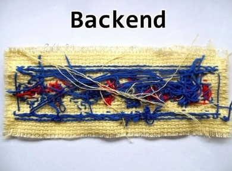

Back end

Este projeto objetiva criar um backend (uma API web) que interaja com o frontend (projeto 3) criado no módulo #3.
Você pode, contudo, realizar este projeto antes do projeto #3. Para tal você utilizará o frontend de exemplo que forneci.
Pode-se dizer que todos produtos de software possuem um banco de dados. Contudo nem todos os dados podem ser expostos. O backend atua como interface entre o frontend e o banco de dados, garantindo que apenas os dados relevantes cheguem aos usuários.
Aplicações backend são extremamente comuns, pois permitem que as empresas donas do software recebam e processem os dados de seus usuários sem que exponha suas regras de negócios e seus dados.
O projeto #2 é pré-requisito deste projeto.
*Este projeto é pré-requisito do projeto #5.
Neste projeto, você deverá exibir, criar, alterar, remover e
mover arquivos do seu sistema.
Além disso, seu código deverá ser capaz de receber argumentos
pela linha de comando.
Crie um código a ser executado pelo terminal que aceite os seguintes argumentos:
Você deve validar todos os parâmetros, de forma que ao passar parâmetros inválidos, seu programa deverá exibir uma mensagem de erro e exibir a lista de comandos e suas instruções de uso.
Uma outra ideia é fazer o programa renomear todos os arquivos de
uma pasta conforme um dado critério.
Ou ainda, agrupar os arquivos em diferentes pastas conforme sua
extensão.
Este projeto objetiva criar um backend que interaja com o frontend (projeto 3) criado no módulo #3, substituindo o CrudCrud.
Crie um servidor web utilizando Express.JS, com um banco de dados MySQL ou MongoDB (sugiro que faça os dois, um de cada vez) contendo as seguintes rotas:
Para utilizar a sua API, coloque o endereço IP do seu backend no
frontend, em vez do endereço do
CrudCrud.
Você pode utilizar tanto o próprio frontend quanto um API Client
(como o Thunder Client) para desenvolver e testar sua aplicação
backend.
Após finalizá-la, garanta que o frontend esteja funcionando sem
problemas com o backend criado.
Agora que finalizamos a API, você deve criar testes automatizados para ela usando o Supertest.
O Supertest é uma ferramenta que simula as interações que o frontend faria com o backend.
Faça um código que envie requisições HTTP para a aplicação backend que você construiu no projeto anterior. Ela deve testar todas as rotas, simulando um uso real da aplicação.
Exemplos de casos de testes: